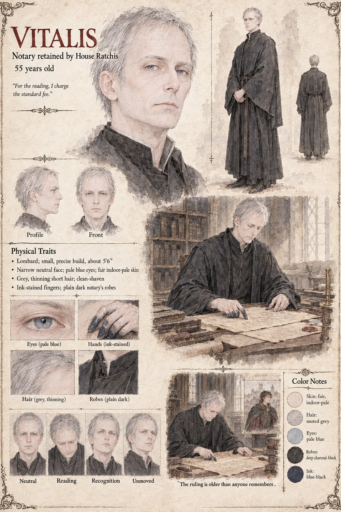

Vitalis
Notary retained by House Ratchis · 55 years old
A notary House Ratchis has kept on retainer for years and trusted for exactly one reason: he has never once told Elder Adelrada what he suspected she wanted to hear. Asked to review the ruling that hands Garibald's mill to Verrasco, he reads the Writ of Undeclared Grace three times and reports, without any apparent alarm, that it rests on a four-generation-dormant precedent that could pry loose a great deal more than a mill, given the right claimant and enough patience.
Two years later, given an instruction rather than a question, he finds that claimant within the fortnight — a minor cousin of a minor cousin, chosen specifically for how little the choice would ever need explaining.
“For the reading, I charge the standard fee.”
Appears in The Third Grain